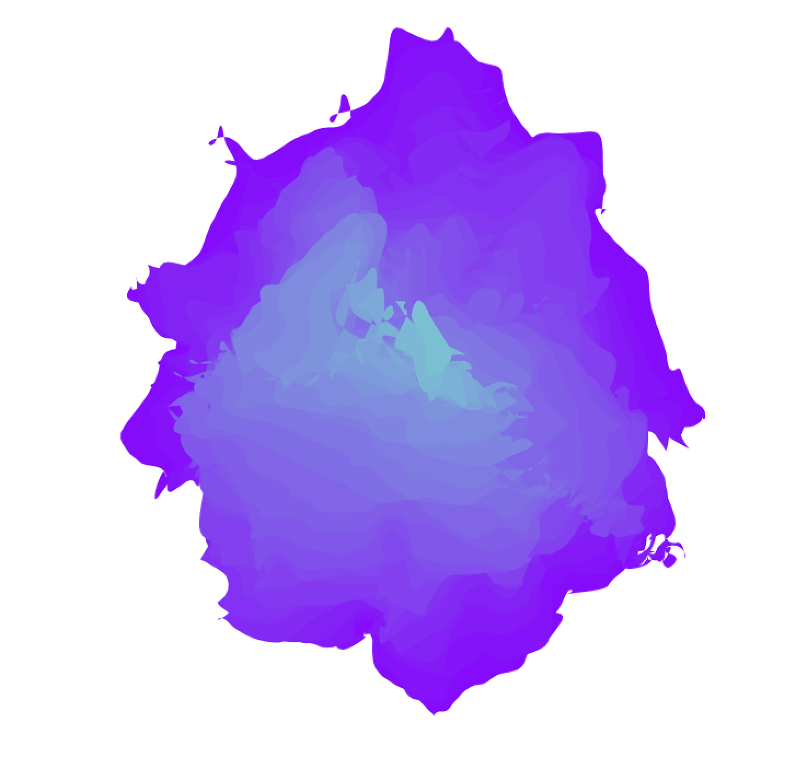

Ragoût de Processing et sa sauce de Gimp
Ingrédients:
- 700kg de Processing
- 300g de Gimp
- 100ml de Courage

Préparation:
- Ouvrez Processing, et codez.
- Si l'image vous conviens, sauvegardez là via Processing (ou imprimécran)
- Ouvrez maintenant cette image dans le logiciel gimp
- Utilisez les filtres, et déformez l'image en ondulant, fractalisez là.
- Ajoutez un filtre de lentille optique et ajoutez une trame d'imprimerie.
Poêlée de Gimp en Julienne de Processing
Ingrédients:
- 1L de Processing
- 100mg de Gimp
- 100ml de Motivation

Préparation:
- Ouvrez Processing, et codez.
- Si l'image vous conviens, sauvegardez là via Processing (ou imprimécran)
- Ouvrez maintenant cette image dans le logiciel gimp
- Utilisez les filtres, et déformez l'image en la fractalisant.
- Flouter là jusqu'à obtenir un concentré de pixels.
- Courbez-là et faites une déformation de lentille Optique.